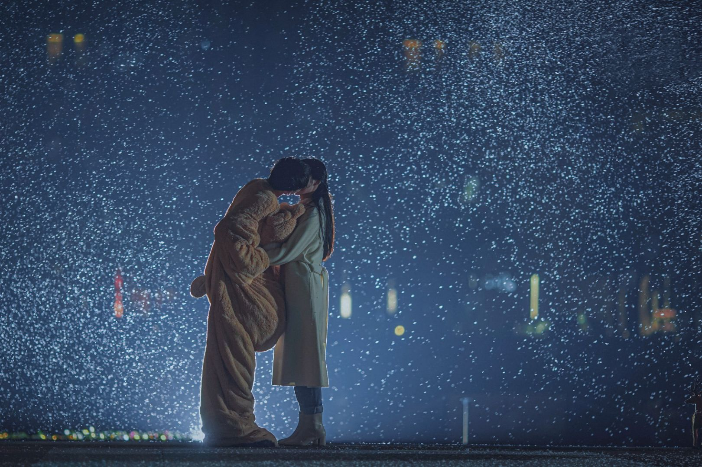
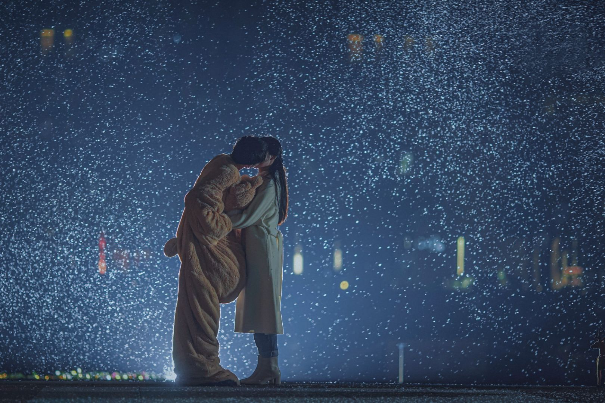
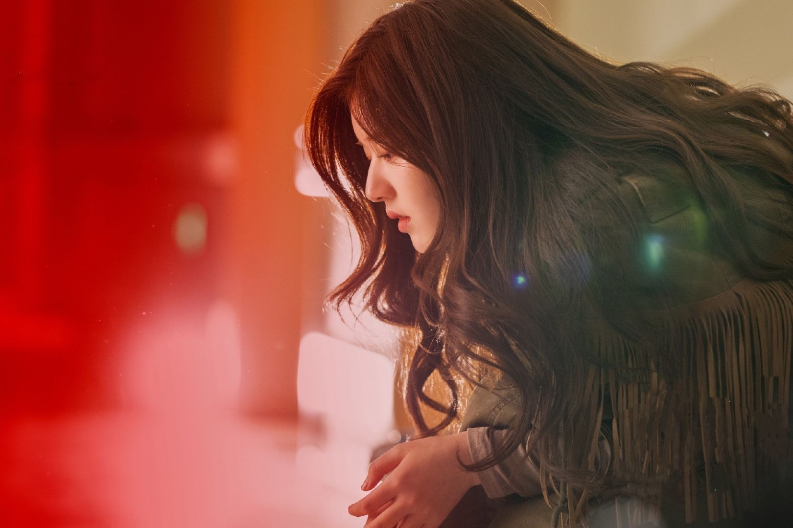
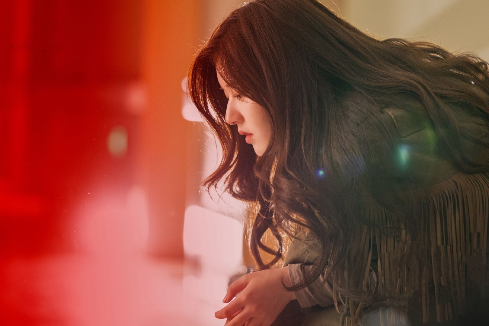

About
做一個簡單的自我介紹。
大家好！這裡是Lina的追劇世界，我平常的興趣就是看劇，只要沒事，我就會點開電視劇來看，對我來說：「生活除了吃跟睡，就是追劇。」因為我主要是追陸劇，
所以劇評內容會有比較多的陸劇，不過，喜歡韓劇、日劇的人也不要急著跳出，搞不好看完以下劇評，就會被其中一、兩部劇給吸引呢！
希望大家在為生活奔波的同時，可以快樂追劇，享受放鬆的時光！
Drama Reviews
這裡有許多電視劇的觀後評論，讓我們一起來看看吧！
蒼蘭訣


主演：虞書欣（小蘭花）、王鶴棣（東方青蒼）
集數：36集
網路播放平台：愛奇藝、IQIYI國際版、WeTV、Netflix
開機日期：2021年2月14日
開播日期：2022年8月7日
蒼蘭訣可以說是我看的第一部古裝仙俠、東方幻想的劇，本來帶著只是看一部劇的心態去看，沒想到最後出不了戲。首先，這部劇的集數分配隱藏了一個彩蛋，一共是 36 集，其中前 8 集是水云天，再 8 集是蒼鹽海、8 集雲夢澤，最後是 8 集的大戰，但這部劇的節奏我認為後面結局的有些太快，好像好多事情都沒交代清楚。不過，這部劇的導演對於畫面特寫的掌控真的太好了，都能夠突現導演想傳達的細節。再者，這部劇的特效真的讓我看得好爽，尤其是大強開大的特效，雖然好像因為劇組沒錢了所以沒開幾次，但次次都深得我心，更是沒有那種仙俠劇最怕出現的五毛錢特效。另外，這部劇也顛覆了我們對天界和魔界的認知，一直以來我們都覺得天界都是好人，而魔界都在打打殺殺，但是蒼蘭訣卻讓天界有了令觀眾憎恨的雲中君，並且天界的人一直在欺負小蘭花，但到了魔界，小蘭花可以成為一人之下萬人之上的月主，也可以得到真正的保護，而這設定也是我很喜歡，且顛覆了我們的刻板印象。
最喜歡的片段是在雲夢澤的那幾集，不僅有趣，還隱藏很多細節，真正下凡歷劫的長珩、赤地、丹音，他們在人間的性格是和在天界時的他們相反的，而正因為這個設定，讓他們因為下凡歷劫而有所成長，就像是長珩，原本的他是個恪守天規的戰神，雖然心有所屬，但礙於天規，他只能娶神女，但是下凡變成蕭潤後，他變得不學無術、又傻，但對比天界的拘束，他成為了一個灑脫、敢愛敢恨、遵從本心的人，因此回到天界後，他不想再被天規束縛，並說出了「掛念鍾情之人便是踏錯，若這荒謬之事便是天規，長珩反了又如何」這等話。赤地、丹音亦是如此，因此我想這也便是歷劫的意義，去經歷劫難而成長，許多原本想不明白的事，經歷完就想通了。
這部劇的每個角色都在成長，就像是上面提到的角色之外，小蘭花離開水云天是他第一次成長，到蒼鹽海的她沒有了之前的天真爛漫、畏事和單純，而最明顯的成長是她發現她愛上東方青蒼以及知道自己的使命後，她變得堅強、勇敢，到她真正成為神女時，更是完全沒有當初小蘭花的影子，其中，演員虞書欣也透過眼神、聲線的轉換來區分的這個轉變，我們也很成功的從她的表現中抓住這樣的訊息。再來是東方青蒼，他的成長是因為情、愛，一開始不懂愛的他，只為了蕩平水云天而生，忽視了身邊的所有人，到後來，光禿禿的七情樹因為遇上了能拯救萬物神女而復甦，但一開始的他是很不願接受的，看著自己即將復甦的七情，還妄想著用業火燒了它，不過到凡間走一遭後，了解了兄弟情、情人愛，也與父親和解了，才讓他明白之前的他不過只是個提線木偶，最終，他坐在自己的七情樹下，任由愛意生長，而這時可以發現有一小根樹枝還沒發芽，因此我認為這是因為東方青蒼還不懂懼，這要等到小蘭花自戕後，他才明白了失去愛人的恐懼、無助吧。
除了角色成長外，一部劇中的前後呼應也是我很喜歡看的點，而這部劇也很多前後呼應的地方，例如說小蘭花一開始為了救長珩而擾亂了他的命簿，驚擾天道重則灰飛煙滅，所以到後來的小蘭花自戕後灰飛煙滅似乎也成了定局，還有就是長珩跳下神水廳前對丹音說「若來生有緣再見，長珩必以死抱今日之恩」，這也讓最後蕭潤因幫丹音擋箭而死，其實不只這些，還有許多前後呼應的細節等著訣人們去拿放大鏡找。其中，我認為司命在前後呼應上有很大的貢獻，她的每一句台詞都似乎在隱晦地解釋未來將發生的事，而她也才是真正的上帝視角，不過司命在蒼蘭訣中並沒有被多提，也因此成為了一個厲害且神祕的角色，這也引起了我對她滿滿的好奇心。
到這裡不得不提一下蒼蘭訣的售後，我從來沒有見過這麼強的售後！綜藝 hi6、直播、角色號、各大晚會、跨年等等，都讓劇粉和 CP 粉覺得太滿足了，而這麼強的宣傳售後，我想這背後的製作公司恒星引力也是功不可沒，這也讓我越來越期待之後恒星引力製作的劇了。最後只能說蒼蘭訣不說再見，去年暑假檔是它，現在的寒假也是它，雖然明明是被愛奇藝歸在戀戀劇場，但後面還是虐到我的心都不知道梗了幾次，不過還是很期待可以出個續集，告訴我們琉璃火是什麼東西、長淵是誰，再補一場大婚，順便把雲中君送去領便當。
#仙俠劇 #蒼蘭訣 #陸劇 #劇評 #虞書欣 #小蘭花 #王鶴棣 #東方青蒼 #Lina
明天也想見到你
 

主演：張楚寒（丁了了）、張康樂（江侃）、謝興陽（丁滿）、盧昱曉（廉歌瑤）
集數：12集
網路播放平台：愛奇藝
開機日期：2020年底
開播日期：2022年4月14日
原本我在點開這部劇前，沒有抱很大的期望，結果！意外的不錯。首先，這部劇因為集數短，所以故事很緊湊，反派什麼的也不存在，可以說是從頭「清新」到尾。再者，這部劇的定位是雙cp，裡面的兩對cp我都很喜歡，不過，我覺得主cp甜的戲份還是略少於副cp，有些可惜。另外，我真的好喜歡這部劇的氛圍感，整部劇是走小清新路線，文青文青的感覺，讓人看了很舒心。
張楚寒飾演的女主丁了了是一位電視台編導，角色性格不是傻白甜，對待弟弟時有姊姊的威嚴，但是面對愛情的反應卻慢半拍，不過，我覺得她的個性是最貼合現實世界的。我第一次知道張楚寒是在青你2，我也很喜歡她，沒想到她也演得不錯，只少不太會尷尬，而且他的氣質很適合這部劇的氛圍。
張康樂飾演的男主江侃是為藥劑學博士，人設是高冷，只專注於科研，但在遇到丁了了後，像是開竅了一樣，一直向了了丟球，不過，很多人都會把高冷人設演的像面癱，而張康樂演的江侃一開始有點面癱，讓人感覺有些尷尬。
不過，我還是很喜歡主cp的愛情，可惜的是到最後一集才在一起，甜的鏡頭很多也都被刪了，好可惜@@。
謝興陽飾演的男二是為跆拳道教練，個性很陽光，是奶狗屬性。盧昱曉飾演的女二是為電視台主播，很喜歡他霸氣的性格，外表冷豔的她，內心卻是住著小女孩。這一對cp很像韓劇會有的氛圍，尤其是女二真的很像韓劇女主，每次換到他們的戲份時，都覺得他們隨時會脫口而出韓語。不過，這對姐弟cp還是很好嗑的，甜的鏡頭也很多。
總之，這部劇我已經在三刷了，很適合放鬆的時候看，從頭到尾都只有甜，沒有讓人生氣的壞人，推薦給大家。
#甜寵網絡劇 #明天也想見到你 #陸劇 #劇評 #張楚寒 #丁了了 #張康樂 #江侃 #Lina
一閃一閃亮星星
主演：張佳寧（林北星）、屈楚蕭（張萬森）
集數：24集
網路播放平台：愛奇藝
開機日期：2020年12月
開播日期：2022年1月26日
原本在點開這部劇的時候沒有抱太大的期待，誰知越看越上頭！這部劇的劇情緊湊，而且女主不是什麼傻白甜，是難得的女強男弱的設定，故事的設定也很特別，雖然都是穿越，但是林北星可以隨時穿越，看到我都想擁有這項技能。另外，林北星和張萬森的cp感也很絕，霸道女同學和奶狗男同學的搭配真的好讚。最後結局的部分雖然看似是BE了，但似乎也可能是HE啊，畢竟是有點開放式決局的感覺！
在這部劇中，我最喜歡的畫面是林北星在現實世界中，站在岸邊的，與無名老人對話的情節，畫面配上配樂，充斥著神秘，而女主表現出的氛圍又有一絲孤獨，聽著只聞其聲不見其人的老人開導著他，「全世界就在你身後」，曾經的女主，在學生時期一直圍著展宇轉，卻忽略了那些在他身後、對他重要的人，而在故事的最後，女主終於領悟了，便轉向了身後。
還有聽說這部劇的電影版要啟動了，還是原班人馬，真的太期待了，希望可以還林北星和張萬森一個真正的HE。
#穿越校園網絡劇 #一閃一閃亮星星 #陸劇 #劇評 #張佳寧 #林北星 #屈楚蕭 #張萬森 #Lina
陪你逐風飛翔


主演：宋祖兒（沈爭一）、王安宇（邵北笙）
集數：33集
網路播放平台：騰訊視頻、WeTV、優酷、芒果TV、湖南衛視
開機日期：2021年2月
開播日期：2021年11月22日
這是一部校園愛情配上滑冰運動這個新穎的題材，並帶點喜劇的成分。這部劇我是因為男女主演是王安宇和宋祖兒，所以才追的，劇情上面也不錯，只是有些點令我想吐槽。首先，最令我氣憤的是這部劇到中後段，蕭清和蕭寒的戲份有些過重，所作所為很心機，很多部份我都快轉掉了，而切我本來以為女二男二是朱樂樂和曲直，沒想到是蕭氏一家人！有點令我不可思議......。還有22集烏龍告白的橋段，有點爛梗，而且告白為什麼不說對方的名字！這整件事情包括後續，我覺得都有些小拖戲。
不過，宋祖兒的演技真的太絕了，尤其是哭戲，都很容易讓人產生共鳴，有兩段哭戲令我印像深刻。第一個是沈爭一誤會邵北笙和蕭清在一起，回家想丟娃娃卻沒丟成，躲回房間痛哭。第二是，沈爭一和邵北笙的正式告白，沈爭一眼眶泛紅地等邵北笙回覆，聽到他願意做她男友時，先是燦爛一笑，而後在一臉無辜的問這次沒有合約了吧，得知答案後，便釋然一笑，這場表演在情緒的處理上非常細膩，具有層次感。
王安宇的演技也很自然，不過，不知道是不是因為人設或是導演要求的關係，邵北笙有時候驚訝的表情有些浮誇，像是瞪眼摀嘴，但是我認為這個舉動不會讓我出戲或是做作，反而很可愛。另外，邵北笙喝醉酒真的真的好可愛！那段我一直瘋狂重播，只差沒有下載下來剪輯收藏。
這部劇的主軸是競技體育，男主邵北笙是花滑選手，女主沈爭一是短道速滑的選手。這部劇花滑的每個鏡頭都很驚艷，皆能體現出花滑的氣質，不過，這部劇更吸引我的是短道速滑的片段。「個人能力固然重要，但若是沒有團隊的配合，單打獨鬥是走不長遠的。」這是我在這部劇所領悟到的，我也有深刻的體會，曾經也受過體育訓練，也為體育比賽付出過的我，在其中學到最多的也是團隊合作的重要性。因此，庄教練告訴隊員們團隊的重要，以及形塑凝聚力時，也使我心有戚戚焉。
這部劇的音效也很妙，音效師在製作這部劇的時候不知道吃了什麼，有時候音效有些浮誇，但是又有說不上來的適合，讓這部劇增加了喜劇以及綜藝感。還有，這部劇有些劇情的畫面真的很美，在燈光與攝影兩兩地配合下，拍出了質感極高的畫面。印象最深刻的是最後一集的最後一個場景，是在直升機停機坪，其中，畫面除了使用一般攝影鏡頭，還使用了空拍機，有一顆鏡頭便是用空拍機飛至停機坪以外所拍。不只是這一段，其實整段都很美，演員的演技、顏值與服化，加上攝影、燈光和調色所呈現的視覺，還有甜甜的戲，這一段戲可以說是2021年我所看的劇中，畫面和劇情最美、最具質感的片段。
整體來說，撇除有些令人無語的劇情，這部劇還是很有質感且激勵人心的，而且演員們想必也為這部劇付出許多。不說了！先去小巨蛋滑兩圈吧。
#校園競技愛情劇 #陪你逐風飛翔 #陸劇 #劇評 #宋祖兒 #沈爭一 #王安宇 #邵北笙 #Lina
月光變奏曲


主演：虞書欣（初禮）、丁禹兮（晝川）、楊仕澤（江與誠）、馬吟吟（顧白芷）
集數：36集
網路播放平台：愛奇藝
開機日期：2020年10月
開播日期：2021年5月20日
月光變奏曲是部作者與編輯的相識、相戀的故事。全劇節奏適當、角色智商在線，是部讓人想要一看再看的好劇。
晝川和初禮的愛情很甜，只是晝川真的是直男無誤，好幾次明明快成了，又因為害羞或是傲嬌，不願意正視自己的內心而錯過，好在最後有修成正果。反而是初禮早早發現自己喜歡上晝川，積極得試探對方的內心。他們之間可以是情人，也可以是朋友，會互相拌嘴，更是會相互扶持，在彼此最難的時候，給予無限的陪伴。
很喜歡晝川和江與誠的相處方式，很搞笑，像兩個大男孩一樣，互相鬥嘴來鬥嘴去，雖然他們表面上的在互相較勁，但實際上，他們卻比其他人還想要彼此變得更好。
我很喜歡這部劇的台詞，晝川的獨白也是我全劇最喜歡的一個部分，不論是夏目漱石「今晚的月色真美」，還是晝川在微博上的表白文章，「真高興世界上居然有那麼巧合的是，我也喜歡你。」真的讓我感受到了作家透過文字所想表達的浪漫。
總而言之，是一部值得追得好劇，雖然沒有大爆，但是有質感的畫面、在線的演技，還有令人心動的台詞。
#甜寵都市愛情劇 #月光變奏曲 #陸劇 #劇評 #虞書欣 #初禮 #丁禹兮 #晝川 #Lina
周生如故
主演：白鹿（漼時宜）、任嘉倫（周生辰）
集數：24集
網路播放平台：愛奇藝
開機日期：2020年11月26日
開播日期：2021年8月18日
幾乎不看BE劇的我，還是入坑了這部劇。這部劇是採用架空歷史的方式來呈現故事背景，劇中的歷史背景有點像是魏晉南北朝，為南蕭北陳。
劇中男女主角礙於身份，行為舉止幾乎都是「發乎情，止乎禮」，最親密的戲也只有擁抱，不過，CP感還是很強烈，再加上任嘉倫和白鹿都很會處理細微的情緒，所以光看他們對視和說話，就已經覺得很甜了。第12集漼時宜和周生辰意外去到南蕭，到第15集漼時宜被賜婚於劉子行的這幾集，是我認為全劇最甜的地方。在南蕭，因為必須隱藏身份，所以師徒之禮也相對不存在，使他們兩個不再被倫理給束縛，能夠放肆地表達與對方的情感。
這部戲最精髓以及最經典的地方，就是結尾男女主角一個被賜剃骨之刑，一個跳樓，結局實在是太虐心，讓很多人都哭掉了許多張衛生紙。這部劇我也對白鹿的哭戲印象很深，尤其是當周生辰在行刑時，時宜在床上輾轉反側的哭，以及得知噩耗後的哭戲表現，都很容易與之產生共鳴，且很有層次，雖然那幾段都因為失聲沒有台詞，但白鹿還是很好的把情緒傳達在表情和肢體上。
我最喜歡的配角之一是桓愈，他算是漼時宜和周生辰之間的催化劑吧，他們之間的感情也是在南蕭以後才更加確信與堅定。而且桓愈與漼時宜和周生辰相處的那幾集，讓這部虐心劇多了些搞笑的成分。
另外，我還喜歡鳳俏這個角色，身為一個女將軍，要讓士兵服從於她，是比男人還要難，所以在沙場上的她頗有巾國鬚眉、冷豔的感覺，不過，當她下鎧甲的那瞬間，就變成了一個活潑可愛的小女孩。在和蕭晏互動的時候，雖然劇裡沒有明說，蕭晏也是個出家人，但我隱約鳳俏是喜歡蕭晏的，這一點純粹是個人觀點。
還有，劉徽真的不適合當皇帝，雖然說劇本可能想塑造他成為一個懦弱的人，就算他信任周生辰，但是我在看的時候，就好想讓他趕快下線。
整體來說，喜歡看BE劇的人我會非常推薦，保證能夠讓你哭的一把鼻涕一把淚，但若是像我一樣偏好愛看HE劇，還是非常推薦你看前面，到後面開始虐的時候，會沒有勇氣繼續看下去。另外，每當夜深人靜時，也很適合看這部劇。
#古裝虐戀劇 #周生如故 #陸劇 #劇評 #白鹿 #漼時宜 #任嘉倫 #周生辰 #Lina
一生一世
主演：白鹿（時宜）、任嘉倫（周生辰）
集數：30集
網路播放平台：愛奇藝
開機日期：2020年9月10日
開播日期：2021年9月6日
一生一世是周生如故的第二部曲，相較於周生如故的BE結局，一生一世是部HE劇，滿足了那些希望周生辰和時宜結婚的觀眾。不過，雖然最後是Happy ending，但是倒數幾集還是很虐啊......，我個人認為虐的程度和周生如故是不相上下的，最後那幾集快哭掉我半包衛生紙了。
這部劇的女主是配音演員，男主是化學教授，不過，劇情的主軸沒有聚焦在他們的職業上，而是在講述他們之間的愛情，因此，配角的感情線也沒有太多的篇幅。周生辰和時宜的愛情不像上半輩子一樣有緣無份，這輩子的他們雖然也是經歷過大風大浪，時宜甚至兩部戲都跳樓，但最終他們終於結了婚，上林賦也寫完了，太令人感動了。
配角們的安排也甚是有趣，一生一世裡的配角皆與周生如故的配角有關聯，最明顯的就是宏曉譽，與前世的名字一模一樣，上輩子是照顧時宜的師姐，而這輩子變成時宜的閨蜜。
前面幾集的劇情我認為有些小慢，劇裡的情節和畫面和周生如故有連結，尤其是時宜昏迷後醒來講的那一段話，太好哭了。建議看完周生如故再來追！會與之產生不一樣的共鳴。
#都市愛情劇 #一生一世 #陸劇 #劇評 #白鹿 #時宜 #任嘉倫 #周生辰 #Lina
你是我的榮耀


主演：迪麗熱巴（喬晶晶）、楊洋（于途）
集數：32集
網路播放平台：騰訊視頻、WeTV
開機日期：2020年9月20日
開播日期：2021年7月26日
這部劇是有關於一位航天設計師和一位女明星，透過王者榮耀拉近彼此的距離，談起晚了十年的戀愛。這部劇的題材和「良辰美景好時光」很像，都是女明星，都是理工學霸，也都是手遊，不過這兩對情人的戀愛方式完全不同，在良辰美景好時光中，他們之間比較是純純的戀愛，而你是我的榮耀卻是成年人式的戀愛，兩者各有不同的閃光點，不過，若是要比較，我比較喜歡你是我的榮耀，可能...CP感比較強烈、沒有煩人的配角吧。
還沒有交往的喬晶晶和于途，其實時不時就在散發曖昧的氣息，尤其是于途看喬晶晶的眼神，多麼寵溺，雖然他又拒絕了晶晶的表白，不過在他拒絕後留下的那滴淚，應該是後悔的眼淚吧。其實這部劇還蠻現實的，不像有些劇，兩人的身份、收入差太多卻還是要在一起，于途就是考慮了和晶晶的收入差太多，且沒辦法時常照顧她，自卑感由然而生才拒絕他，所以在和晶晶交往前的于途，常常都是一副愁眉苦臉、對生活感到無奈的樣子。不過在他們交往後，于途就被晶晶給同化了，晶晶在卸下女明星這個標籤後，就變成一個古靈精怪的女孩子，于途不變的活潑起還也難。他們之間的感情可以說是成年人愛情的典範，我只能用一個「甜」字形容，兩人的眼神裡都透露著愛意，光是對視空氣就充滿粉紅泡泡，不過這部劇真的好多吻戲，CP粉表示看得好開心。
一開始，喬晶晶和于途是透過王者榮耀重新連絡上，這部劇因爲有得到王者榮耀那邊的授權，所以所有的遊戲畫面都做得很精緻，連遊戲角色都和手遊裡的一模一樣，不同於良辰美景好時光是演員直接演遊戲角色，我更喜歡用遊戲畫面這樣的方式，雖然我看不太懂遊戲如何進行，因為我沒打過手遊，不過看完這部劇，我還挺想試試看的，不過現實生活沒有像于途這樣的人教我打遊戲QQ。
另外，這部劇在航天相關的劇情也做得很細緻，不管是道具、場景，還是劇情內容，都透露著專業。航天果然是最浪漫的職業，連集體婚禮的場地都是星星、星球，真的好好看。不過，我個人認為，最後兩集在非大陸地區長大的我，會覺得有意無意地宣揚中國大陸的航天多麼多麼好，有點過於冗長，不過其他方面我還是很喜歡。
這部劇的配角也都演得很好，全員智商在線，而且金晨飾演的夏晴雖然是于途的前女友，後來也想挽回他，不過她還是有保存理智，並沒有想拆散晶晶和于途，真慶幸，是部沒有惡女配的戲。
這部劇真的有好多好多名片場，說都說不完，作為觀眾，可以很明顯的感受到幕後工作人員以及演員們的用心。非常推薦，有空的人也可以二刷、三刷以上，每看一次，都可以感受到不同的魅力。
#都市愛情劇 #你是我的榮耀 #陸劇 #劇評 #迪麗熱巴 #喬晶晶 #楊洋 #于途 #Lina
我，喜歡你
 

主演：趙露思（顧勝男）、林雨申（路晉）
集數：24集
網路播放平台：騰訊視頻、WeTV、愛爾達影劇台、中天娛樂台
開機日期：2019年
開播日期：2020年9月15日
這部劇在講一個廚師和一個總裁的戀愛，其實說實話，這種劇情真的有點老套路，而且很像趙露思的另外一部劇《一不小心撿到愛》，都是勞工階級的人和總裁談戀愛，不過《一不小心撿到愛》這部劇我棄追了><，因為套路真的真的太老了，而且男女主極度沒有CP感，說實話，我認為趙露思和他所以搭過的男主幾乎都很有CP感。
這部劇有一點讓我很驚喜，男主林雨申和女主趙露思現實雖然差了很多歲，林雨申40歲，趙露思22歲，相差18歲，真的是大叔和蘿莉，但是！！！還是很有CP感，完全沒有違和感，不的不說，選角真的很成功。
這部劇的配角也很逗，尤其是高全安，在小說裡他的人設是同性戀，不過可能是中國大陸那邊的規定，最後和高全安一起出場的是一個女生，雖然如此，他在劇中的舉手投足都給人一種gay gay的感覺。這部劇雖然是愛情劇，但是我覺得它也有很多喜劇的成分在，尤其是當顧勝男、徐招弟和高全安聚在一起的劇情。
不過，這部劇在最後兩三集的時候，是不是編劇突然覺得顧勝男和路晉的感情有點太順利了，想來點下馬威，結果我看到的是，顧勝男的智商直線下降，之前顧勝男出事，閨蜜們都會引導他走上正確的路，結果這次她的閨蜜們也沒有好好地開導，最後只剩路晉智商在線，把劇情拉了回來，實話說，其實這樣最後幾集顯得有些多餘，我也是用跳轉的方式看完最後的劇情。
還有啊～這部劇有些劇情片段刪很多，像是拳擊館場景的劇情，聽說他們拍了四、五個小時，男主林雨申當時還高燒40度，結果正片都被剪光了，有點可惜，不過正片裡的畫面非常美，燈光、機位調整得非常好。
整體來說，是部適合下飯的劇，裡面有很多好看的煮飯畫面，讓人看得肚子餓，不建議在半夜的時候收看，也有很多好看的畫面，像是潑漆那段，且不說演員之後要如何清理身上的漆，但那段畫面真的很美，攝影師一定要加雞腿！！！
#都市愛情劇 #我，喜歡你 #陸劇 #劇評 #趙露思 #顧勝男 #林雨申 #路晉 #Lina

月光變奏曲｜晝川
就像陰暗角落里的植物，某日見過陽光，從此向陽而生，作出決定時，這一刻的心跳，平靜卻滾燙，
我想把我的太陽，留在我的身邊，以一輩子作為時間單位。

月光變奏曲｜初禮
人生最好的狀態，就是略帶風霜，仍有夢想。

蒼蘭訣｜東方青蒼
從現在起，你是我的，你的命屬於我，你的呼吸屬於我，你的心跳屬於我，
你身體裡的每一滴血都屬於我。
OST Lyrics
追劇除了劇情、演員，還有配樂也是很重要的，以下介紹了幾部劇的OST，並附上了歌詞，讓我們一起來看看吧！
- All
- 明天也想見到你
- 陪你逐風飛翔
- 我，喜歡你
- 烏鴉小姐與蜥蜴先生


Contact Me
想看更多劇評、聽更多OST嗎？點選下方圖示，可以看到更多更豐富的內容。有任何不足或是想分享想法的地方，歡迎在下方表單留下想說的話，我們都會仔細閱讀喔：）
Social Profiles
Email Me
liiiina10@gmail.com
Call Me
0905-123-456